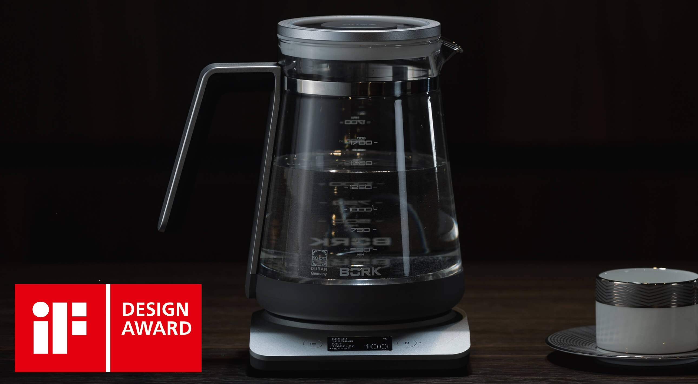
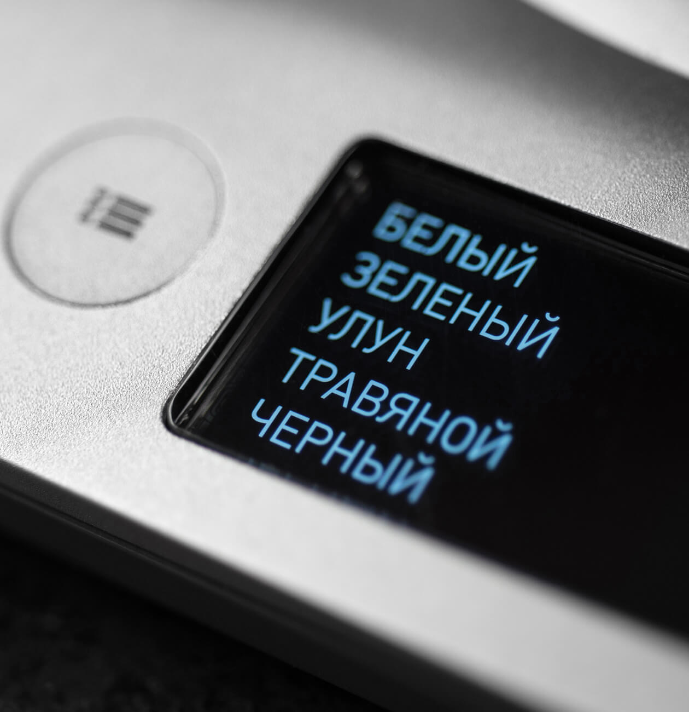
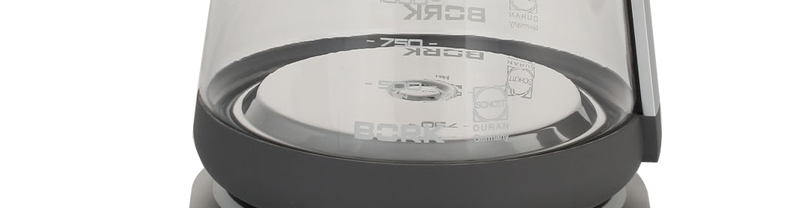
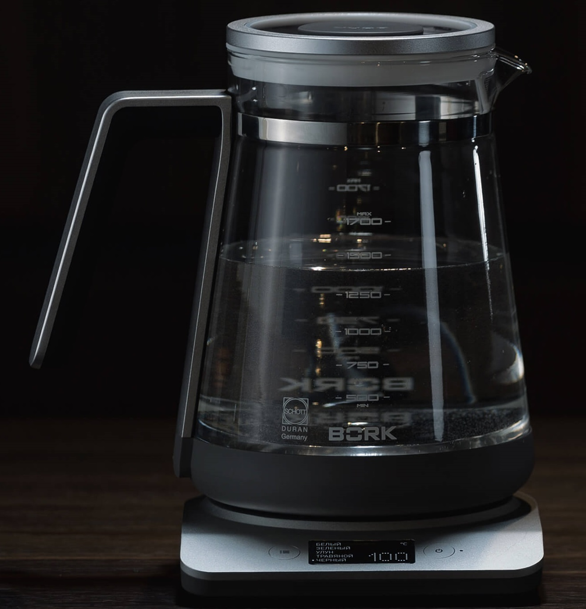
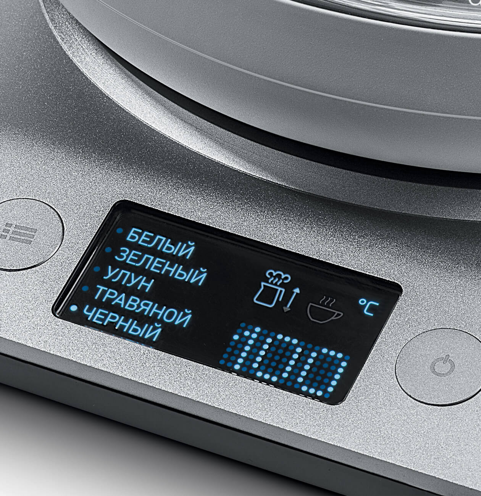
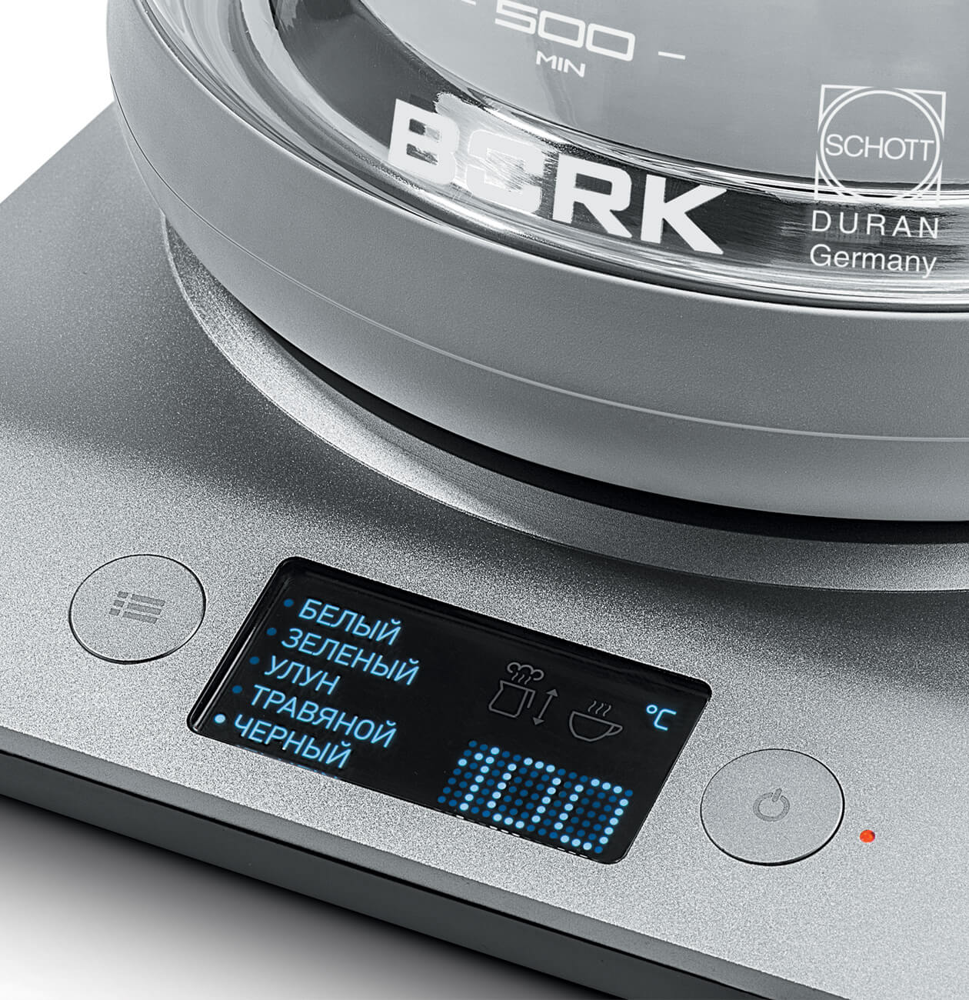
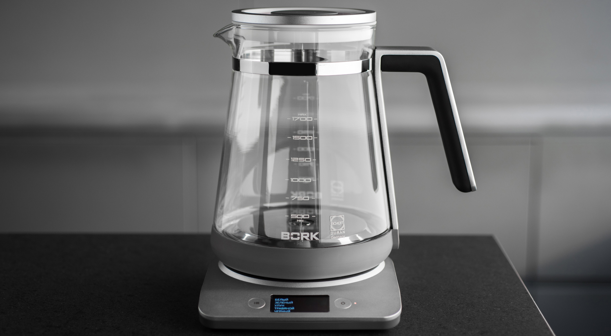
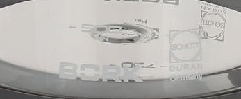

Чайник BORK K780
Выдающийся дизайн, вдохновляет и восхищает. Чайник BORK K780 удостоен престижной награды IF DESIGN AWARD!
5 температурных режимов
Режимы соответствуют определенным сортам чая или кофе и позволяют нагреть воду до температуры, необходимой для правильного заваривания.
- Белый 65°С
- Зеленый 75°С
- Улун 85°С
- Травяной 95°С
- Черный 100°С
Тихая работа
Полированный нагревательный элемент и специально разработанная форма графина обеспечивают низкий уровень шума. Это позволит общаться даже шёпотом во время работы чайника.
Быстрое закипание
Конический выступ на нагревательном элементе, увеличивает площадь соприкосновения с водой, поэтому чайник быстрее закипает и как результат расходует меньше электроэнергии.
Технология BOIL FIRST
В случае, если вы отказываетесь пользоваться сырой водой, данная программа позволит вскипятить воду, а затем получить необходимую температуру в зависимости от выбранного сорта чая. Функция включается нажатием и удержанием 3 секунды кнопки on/off, при этом на дисплее отображается стрелка направленная вверх.
Функция KEEP WARM
С помощью этой функции чайник поддерживает заданную температуру воды в течение 10 минут. А герметичная крышка с силиконовым уплотнителем способствует более долгому сохранению тепла. Функция включается нажатием и удержанием 3 секунды комбинации кнопок on/off + выбор режима.
Обзор «ВОКРУГ»
Информативный LCD-дисплей с русскоязычным интерфейсом, отображает текущую температуру и выбранный режим. Плавный наклон передней панели и высококонтрастный LCD дисплей, как в дорогих авто, просматриваются под любым углом.
Стиль
Корпус изящного чайника изготовлен из немецкого термостойкого стекла Schott Duran, не содержащего примеси и посторонние компоненты, идеальный угол носика, обеспечивает плавную подачу воды без пролива по корпусу. Графин, конической формы с матовой силиконовой основой, позволяет располагать его на любой горизонтальной поверхности. Чайник не скользит, а Ваша мебель защищена от царапин. Эргономичная ручка чайника выполнена из анодированного алюминия, который имеет бархатную текстуру, на нём не видны отпечатки, данное покрытие устойчиво к царапинам. Матовый кабель, является наиболее надёжным, так как не боится изломов, перепадов температур и влажности.
Безопасность
Сенсорный датчик выключения питания, находится в нагревательном элементе. Эта технология позволит отключиться чайнику при наборе необходимой температуры, даже при открытой крышке.
Технические характеристики
Напряжение: 220–240 В
Частота: 50/60 Гц
Мощность: 2000–2400 Вт
Габариты : 255*235*200 мм
Объем: 1,7 л
Вес: 1,6 кг
Страна-производитель: Китай